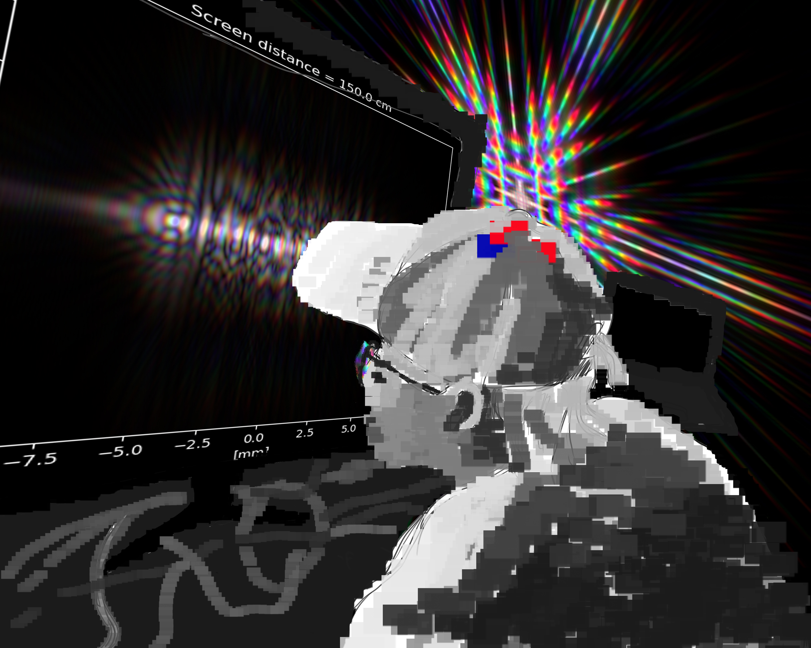

some photos i took and like
veci (sketches/drawings)
curbside physics Mostly exports of side-notes from lectures, sketchbooks, etc. on physics.
Interactive website of urban cycling in Bratislava, collaboration with my brother Ľuboš Perniš
Cycling video, part of exploring the format and possibilities of the project.
(python library for the diffraction patterns: https://github.com/rafael-fuente/diffractsim)
It's a bit refreshing to be so busy, at the same time I find myself in brief moments of intermission. I loved living close to the hills at the outskirts of the city (Pötzleinsdorf) .

There might be 6 curled up dimensions. There might have been 10 of them, but then 4 unravelled.
Completed prompt "interface" for my winter '21 application to the Digital Arts programme at Academy of Fine Arts and Design in Bratislava (AFAD/VŠVU).
Určite sú ľudia jednou z najdôležitejších častí života. Neustále sa ovplyvňujeme, máme radi, komunikuje, spolunažívame, ale nikdy sa naozaj nestretneme. Celý život jeden okolo druhého oscilujeme a priťahujeme sa. Čím bližšie sa k sebe však dostaneme, tým viac zistíme, že sa jeden druhého nikdy ozajstne nedokážeme dotknúť. Od istého bodu sa rovnako ako častice viac nevieme priblížiť, ani nie vôľou, ale len kvôli vrodene inherentnej ľudskosti. Dokáže nadviazať spojenie, vymieňať si medzi sebou informácie, nikdy však nedokážeme prekročiť dané rozhranie. Toto ľudské rozhranie: napriek tomu, že sme všetci rovnakí, sme vždy sami; je skoro ako kebyže, sme boli raz dávno za niečo potrestaní. A preto, dnes viac, ako možno hocikedy predtým, každý rozumieme tejto inherentne ľudskej diskrétnosti, avšak rovnako sa stále neúnavne snažíme toto rozhranie prekročiť.
Stránka je hostovaná pomocou github pages, programovaná s pomocou Sass extension pre css. Js je použitý pre hornú sínusoidovú animáciu. Fotky sú z vlastnej tvorby, Tokyo 2019, Viedeň 2021, Londýn 2021, podľa poradia. Ilustrácie, kresba a konečná animácia je robená v Adobe Photoshop.